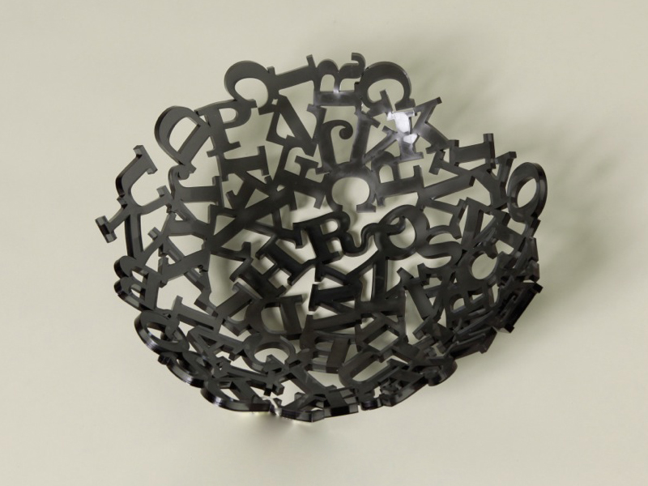

Buchstabenschale
Design made in Berlin
Farbenspiel
Neben der klaren Variante ist die Schale zur Zeit in Schwarz und Weiß erhältlich. Ebenso gibt es sie mit Serifen oder auch ohne. Das qualitativ hochwertige Acrylglas, welches UV-beständig ist, macht die Schale wiederum sehr leicht. Das Farbspektrum von Acrylglas ist groß, gern nehmen wir Ihren Farbwunsch auf und setzen uns mit Ihnen in Kontakt.
Größen
Mit einem Durchmesser von 25 cm und einer Dicke von 5 mm ist die Schale stabil. Die Möglichkeit den Durchmesser zu erhöhen ist machbar. Bitte setzen Sie sich mit uns dazu in Kontakt.
Galerie

Impressum © 2015 Saskia Dannenbring und Isabel Stolze